2026-08-14T20:03:13+00:00
115 Kenwood Ave
The property appears to be a single-family residence with a detached garage, exhibiting generally fair to good exterior conditions.
No open-data match yet
Open entry
Syracuse Property Atlas
A slow, sourced field notebook for city properties: parcel data, Street View, AI image observations, city open-data matches, tract context, and OpenStreetMap features.
Atlas map
Orange points are published entries. Gray points are parcels still waiting in the queue. Select a point to open the property popup.
Published properties
Each entry is generated by the hourly pipeline. AI notes are treated as field observations, not official code findings.
2026-08-14T20:03:13+00:00
The property appears to be a single-family residence with a detached garage, exhibiting generally fair to good exterior conditions.

2026-08-14T19:03:10+00:00
A street-level view shows two residential structures separated by a paved driveway, with significant lens glare obscuring the upper portions of the buildings.

2026-08-14T18:03:11+00:00
A well-maintained one-and-a-half-story residential home with gray siding, a mowed lawn, and a pile of lumber on the curb-side grass strip.

2026-08-14T17:03:20+00:00
A single-story bungalow-style house with a front porch, elevated on a sloped, maintained lawn.

2026-08-14T16:03:05+00:00
The image displays a single-family residence with green siding, a front porch, and visible landscaping, alongside a notable accumulation of organic debris near the public sidewalk.

2026-08-14T15:03:27+00:00
A two-story residential duplex with light-colored siding, a front porch, and a maintained front lawn, partially obscured by strong sun glare.

2026-08-14T14:04:42+00:00
The visible exterior of the property appears to be a residential structure with a generally maintained yard, though the view of the building is significantly obstructed by a large tree.

2026-08-14T14:01:09+00:00
A two-story single-family home with grey siding, an enclosed front porch, and a maintained lawn featuring some temporary yard items in the foreground.

2026-08-14T13:56:14+00:00
A one-and-a-half-story residential structure featuring a red upper gable, white siding, an enclosed front porch, and established front yard landscaping.
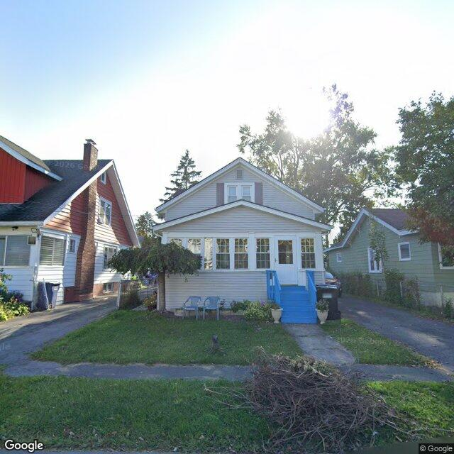
2026-08-13T22:02:54+00:00
The property is a well-maintained single-family home with light siding, an enclosed front porch, and a mowed lawn, though a pile of cut brush is visible in the foreground.
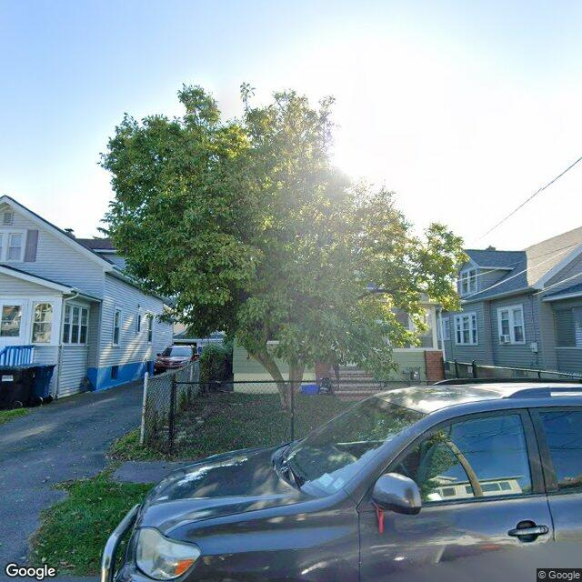
2026-08-13T21:02:55+00:00
The exterior of the residential property is heavily obscured by a large mature tree in the front yard and strong sun glare.
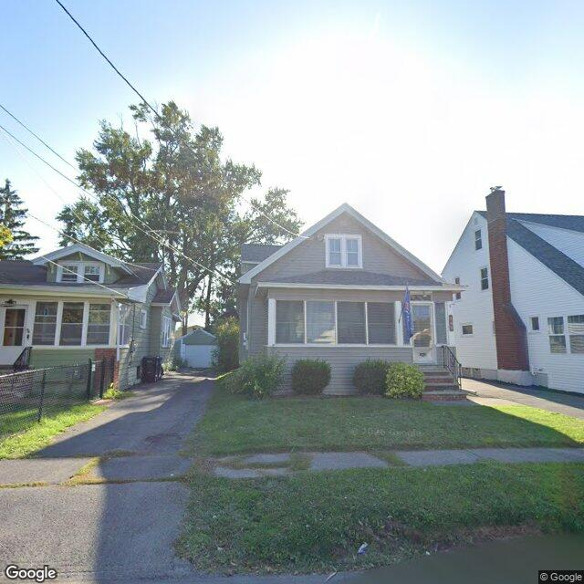
2026-08-13T20:02:52+00:00
The property is a well-maintained single-family bungalow with intact siding, roof, and windows, and a neatly kept front yard.
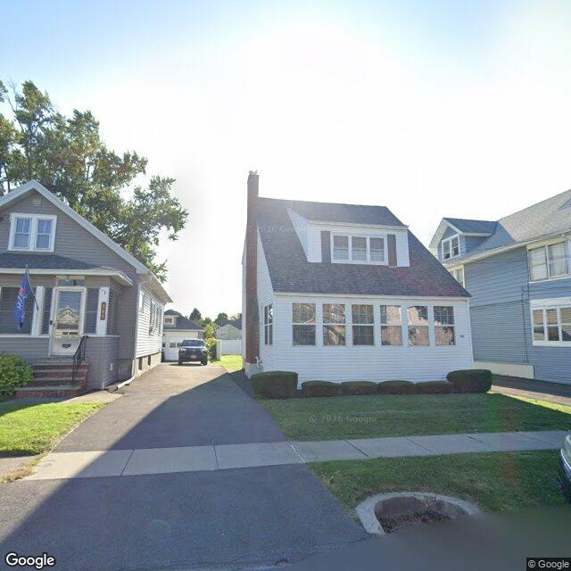
2026-08-13T19:02:52+00:00
A well-maintained one-and-a-half-story single-family home with white siding, an enclosed front porch, and a manicured lawn.
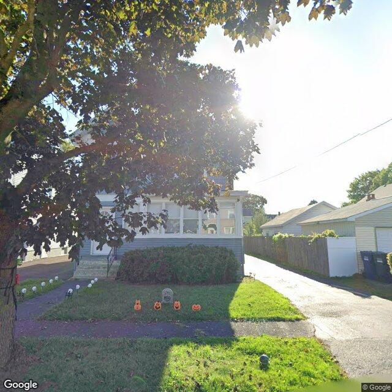
2026-08-13T18:05:55+00:00
The visible exterior of the property appears to be a two-story residential structure with an enclosed front porch, exhibiting generally well-maintained conditions.
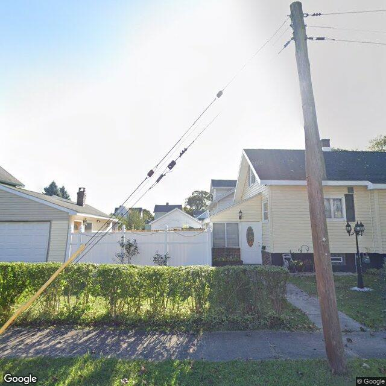
2026-08-13T17:02:57+00:00
The visible exterior of the property appears to be a single-family residence with generally maintained features and landscaping.
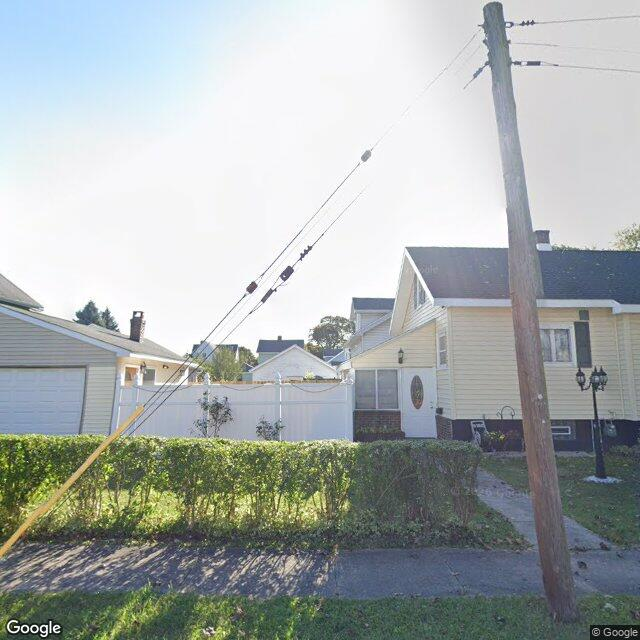
2026-08-13T16:02:52+00:00
A single-family residential property with light yellow siding, a manicured hedge, and a side entrance, viewed from the street behind a utility pole.
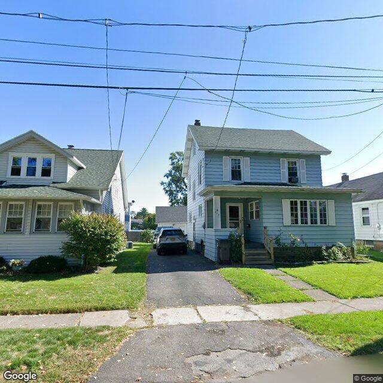
2026-08-13T15:03:01+00:00
A two-story single-family home with light blue siding, a front porch, and a paved driveway, appearing in generally fair condition with a maintained lawn.
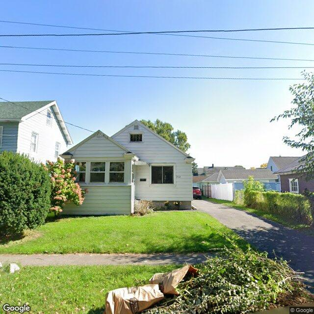
2026-08-13T14:02:55+00:00
A single-story residential structure with light-colored siding and a well-maintained lawn, showing no obvious exterior signs of vacancy or deterioration.
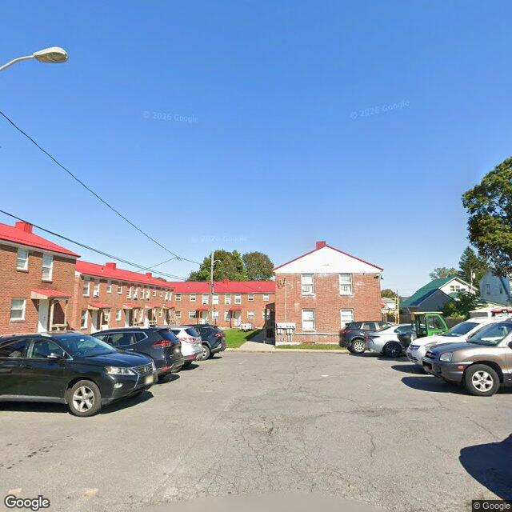
2026-08-13T13:03:17+00:00
A multi-building brick residential complex with red roofs is visible across a paved parking lot under a clear sky.
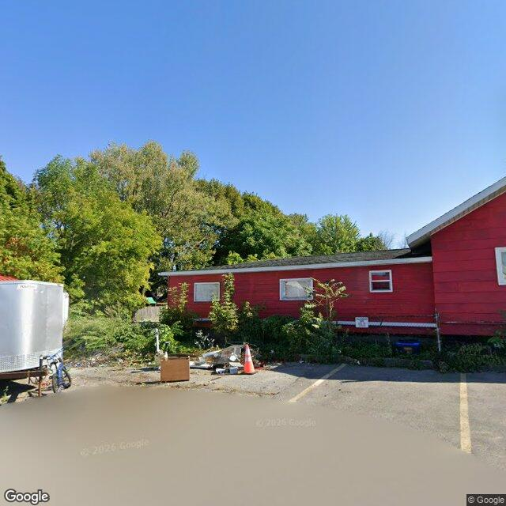
2026-08-13T12:02:54+00:00
The image shows a single-story red building with a paved parking area containing some debris, a trailer, and boarded-up windows.
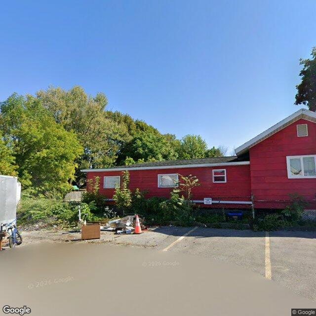
2026-08-13T11:02:56+00:00
{ "summary": "A single-story red commercial building with an asphalt parking area in front, showing some accumulated items and vegetation along the foundation.", "property_type_guess": "commercial", "visible_conditions": [ "Red siding appears mostly intact with some minor weathering", "A small pile of miscellaneous items, including a wooden box and a traffic cone, is present on the edge of the asphalt lot", "Vegetation and weeds are growing closely along the foundation and fence line", "One window on the left side of the facade appears to be covered or boarded with a solid light-colored panel" ], "condition_scores": { "roof": "fair", "siding_or_facade": "fair", "windows_doors": "fair", "porch_or_entry": "not_visible", "yard_or_lot": "fair", "trash_debris": "minor", "vegetation_overgrowth": "minor" }, "visible_flags": { "boarded_windows_or_doors": "yes", "fire_damage_visible": "no", "structural_damage_visible": "no", "vacancy_signs_visible": "no", "active_construction_visible": "no" }, "possible_unrecorded_issues": [ "Accumulated debris and items on the asphalt lot", "Potential boarded window on the front facade" ], "image_annotations": [ { "label": "debris accumulation", "reason": "A pile of miscellaneous items, including a box and loose materials, is located on the edge of the parking lot.", "bbox": { "x": 0.25, "y": 0.67, "width": 0.2, "height": 0.09 }, "confidence": "high" }, { "label": "covered window", "reason": "Window appears to be covered or boarded with a solid light-colored panel.", "bbox": { "x": 0.32, "y": 0.55, "width": 0.06, "height": 0.04 }, "confidence": "medium" } ], "needs_human_review": true, "confidence": "medium", "caveats": [ "The view of the building is from a distance across a parking lot, and some lower portions of the facade are partially obscured by vegetation." ] } }
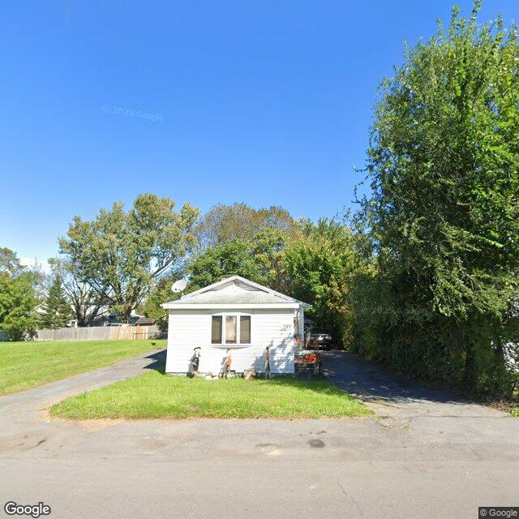
2026-08-13T10:02:57+00:00
A single-story residential structure with light-colored siding and a front-facing window, situated on a grassy lot with an adjacent driveway.
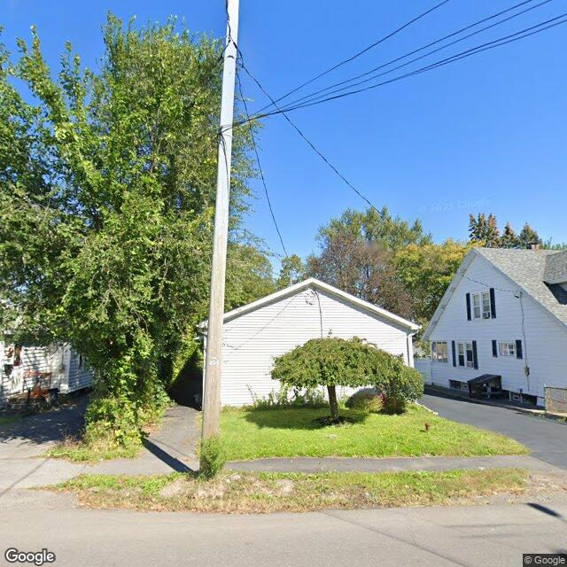
2026-08-13T09:02:56+00:00
The image shows a white vinyl-sided detached garage or accessory structure with a small ornamental tree in front, situated next to a white residential house.
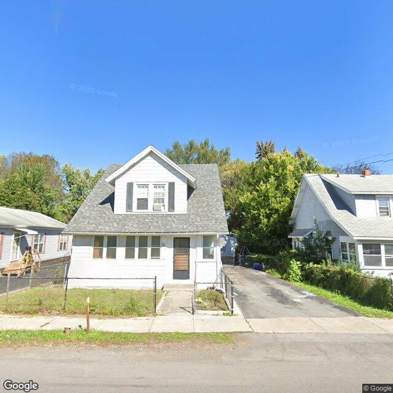
2026-08-13T08:05:06+00:00
A one-and-a-half-story single-family residential structure with white siding, an asphalt shingle roof, and an enclosed front porch, enclosed by a chain-link fence.
Method
The database starts with Syracuse parcels and enriches each selected property with vacant, rental registry, code violation, and unfit-property feeds. Census geocoding adds tract-level ACS context, OpenStreetMap adds nearby mapped features, and optional image analysis adds a visible-condition read when a free or paid image source is configured.